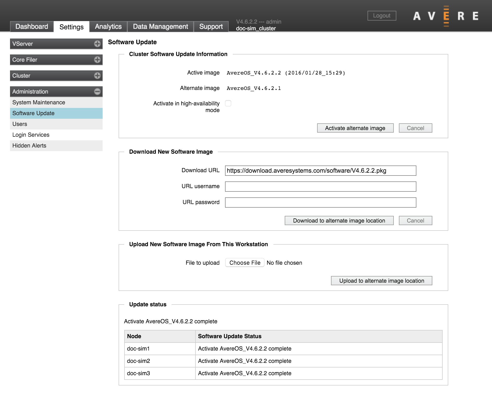

Administration > Software Update
Avere Control Panel includes controls for downloading and installing new software on cluster nodes.
{kind=link}
Avere OS uses an alternate boot image for software updates. When you install a new Avere OS software distribution, that distribution is installed on a second boot partition without interrupting the node’s normal operation. To switch to the newly installed software, the system reboots using the alternate partition image.
After switching the active image, the previous software remains and becomes the alternate partition. If you experience problems with the new software, you can back out the changes by switching back to the alternate image. (Note, however, that some software releases include features that are not reversible after installation - if your current system includes one of these features, you cannot downgrade the installation.)
Updating Avere OS Software
The process for installing a new software distribution includes these steps:
Obtain new Avere OS software and install it in the alternate image partition.
- Use the Download New Software Image section if you want to download software from a URL directly onto the cluster alternate image.
- Use the Upload New Software Image From This Workstation section if you want to upload software from the machine you are using to connect to the Avere Control Panel.
After the software package is loaded onto the cluster, it will appear in the Alternate image description.
Click the Activate alternate image button to reboot the cluster nodes using the new software.
After the primary node finishes activating its software, it triggers updates for the other nodes in the cluster. Each node must download the software package from the primary node and then activate it.
The update process can take more than a minute per node. The Update status section shows the progress of software updates among the nodes.
The Activate in high-availability mode checkbox is enabled by default if HA is active on the cluster. HA mode coordinates node reboots so that HA partners do not become unavailable at the same time.